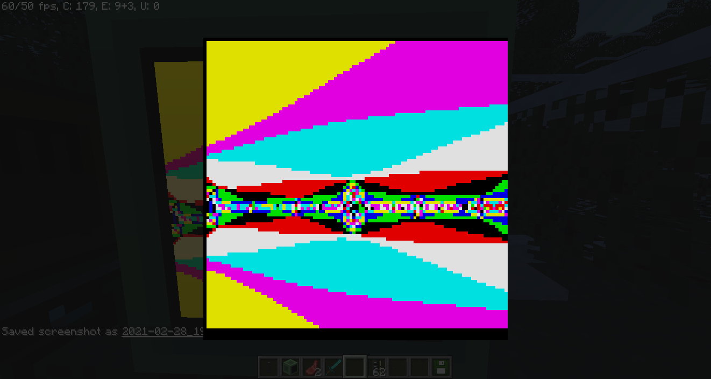
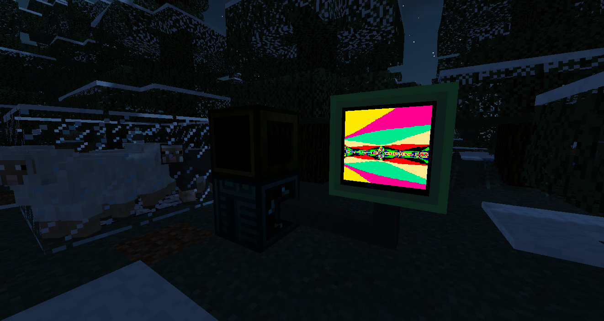
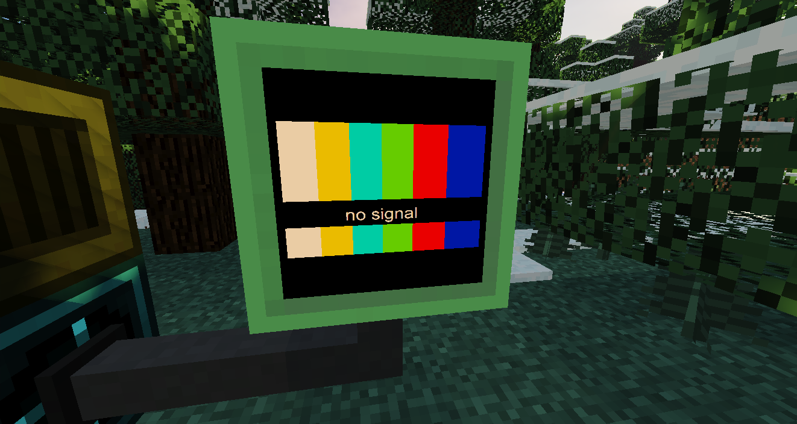
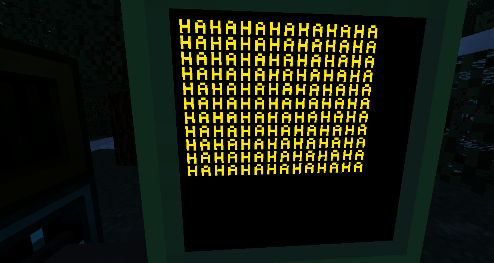

OpenLCD is an Opencomputer addon mod that offers you high resolution screen.
It is useful for those who want to draw a clear image on screen instead of using ascii character.
Showcase

This Fractal is opened in GUI

This Fractal take 10 minute to render :P

The default image of screen when turn on

A set of alphabet bitmap is included in the mod
API
isOn():boolean
return true if LCD is on
isOff():boolean
return true if LCD is off
getVramSize():int
return vram size in bytes. Vram is width * height * 4
turnOn()
turn on the LCD
turnOff()
turn off the LCD
getResolution():int, int
return width, height
setResolution(int width, int height)
set new LCD width and height and blank the screen.
WARNING: i didnt set the limit for width and height. dont be greedy or your pc will be burned